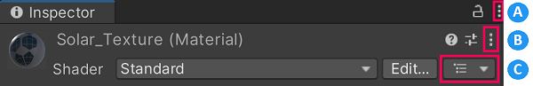

You can view and edit a Material asset in the Inspector window.
The Material Inspector makes it possible to do the following things:
See Materials introduction to learn more about Materials.
 Material controls in the Inspector
A: Inspector Controls
B: Material Controls
C: Material Hierarchy
Click Material Controls to open the selected Material’s Settings menu.
| 设置 | 功能 |
|---|---|
| Select Shader | Move focus to this shader asset in the Project window. This can aid navigation in a Project with many Assets. |
| Edit Shader | Open the source file for the shader asset that this Material uses. |
| Select Material | Move focus to this Material asset in the Project window. This can aid navigation in a Project with many Assets. |
| Flatten Material Variant | Convert this Material Variant to a Material and retain its Property values. Only available when the selected Material is a Variant. |
| Copy Material Properties | Copy Material Property values so that you can copy them to other Materials. |
| Paste Material Properties | Paste Material Property values into this Material from the computer’s clipboard. Only available when there are Property Values in the clipboard. |
| Create Material Preset | Create a duplicate of this Material’s Property settings. See Presets for more information. By default, Unity creates the duplicate in the same asset directory as this Material. |
| Copy Atlas | Copy the font atlas to the keyboard. Only for Text Mesh Pro Materials. |
| Paste Atlas | Paste a Text Mesh Pro font atlas into this Material. |
| Reset | Reset all Material properties to the default values specified by the shader associated with this Material. |
The properties the Unity Editor displays for a Material depend on the Material Properties defined by the shader that this Material uses. However, all Materials share three Advanced Options.
| Advanced Options | 功能 |
|---|---|
| Render Queue | Select a Render Queue. The Material’s shader determines the default Render Queue value. Corresponds to the Material.renderQueue property. |
| Enable GPU Instancing | Optimize draw calls for meshes that use this Material. See GPU Instancing for more information. |
| Double Sided Global Illumination | Instruct the Progressive Lightmappers to consider backfaces in global illumination calculations. When this option is active, back-facing polygons bounce light using the same emission and albedo values as front-facing polygons. Note: The appearance of back-facing polygons does not change when you enable this option because this option does not cause Unity to render back-facing polygons or add them to lightmaps. Corresponds to the Material.doubleSidedGI property. |
Material